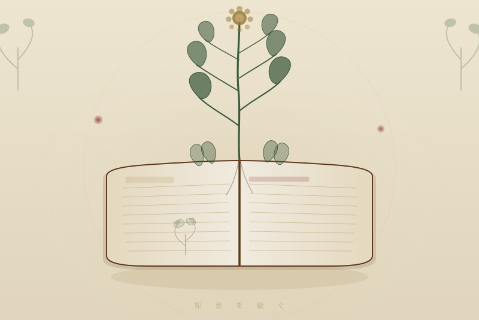

Book · 書籍
Natural Therapy at Home — Revised Edition
著 東城百合子 / あなたと健康社
誰でもできる食事と手当法。
薬に頼らず、身体が本来持つ力を引き出す。
戦後に失われた「自分の身体を自分で守る知恵」が、
この一冊に凝縮されている。
Why I Recommend
01
この本が扱うのは、西洋医学が入ってくる前から日本人が実践してきた
食事療法・手当法の知恵だ。
梅干しの番茶、こんにゃく湿布、里芋パスタ、生姜シップ——
それは「民間療法」と一言で片づけられがちだが、
何百年もかけて身体で確かめられてきた実践の積み重ねである。
「地・血・知」の「知」とは、まさにこういう知恵のことだ。
先人が身体を通して磨き上げた、本物の知識。
02
現代医学は症状を抑えることに長けている。しかし、
身体が本来なぜそういう状態になったかを問うことは少ない。
この本の著者・東城百合子は、食事と手当によって
自らの難病を克服した経験から、この知恵を何十年もかけて体系化した。
「食べ物が薬になる」というのは比喩ではない。
本物の塩、発酵食品、季節の野菜——
それが身体を本来の姿に戻す力を持っている。
この本は、その原点を丁寧に教えてくれる。
03
病院に行く前に、自分でできることがある。
子どもの発熱、腹痛、打ち身、風邪の引き始め——
この本はそういう「日常のトラブル」に対して、
薬を使わずに対処するための具体的な方法を教えてくれる。
本物の調味料を選ぶことと、この本を持つことは、
同じ方向を向いている。
「自分の身体は自分で守れる」という自信と知識を、
家族に残したい人に届けたい一冊だ。
04
この本が最初に出版されたのは1972年。
改訂を重ねながら今も読み継がれているのは、
書かれた内容が「流行」ではなく「本質」だからだ。
流行りのサプリや健康法は10年で消える。
しかし、梅番茶が風邪に効くという知恵は、100年後も変わらない。
そういう知識を子どもたちに残すことが、
本当の意味での健康の贈り物だと思う。
Book Info
Inheriting the wisdom of our ancestors
薬が普及するより何百年も前から、
人は食べ物と手当で身体を守ってきた。
その知恵は、今も有効だ。
それを知っているか、知らないかで、
日常の選択がまったく変わってくる。
この本は、その知への扉だ。